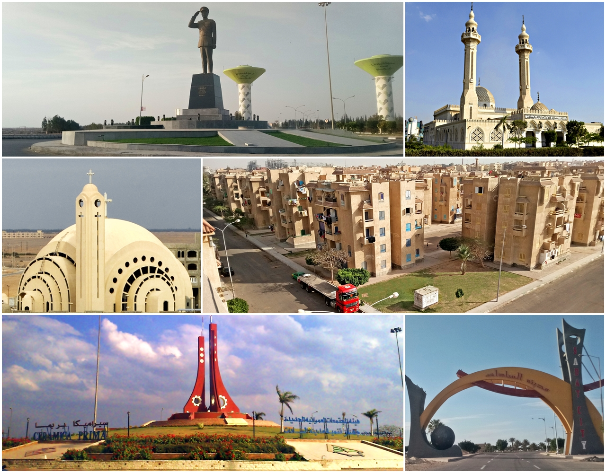
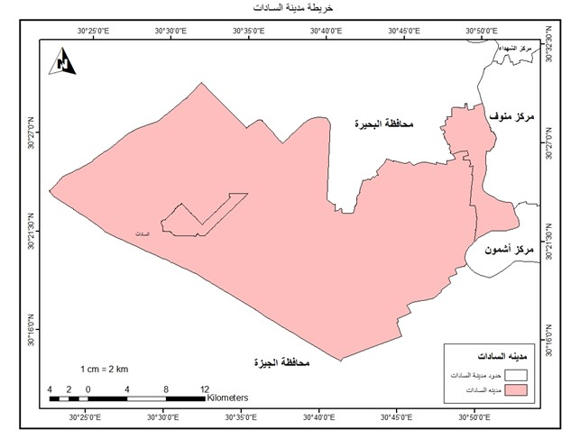
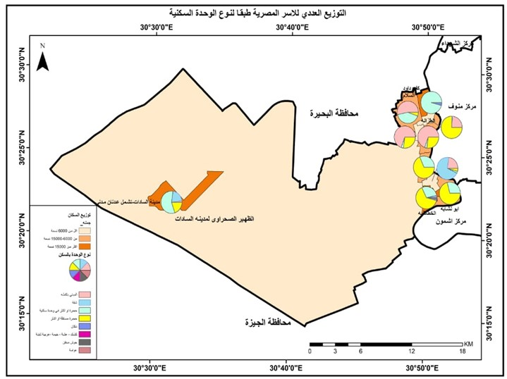
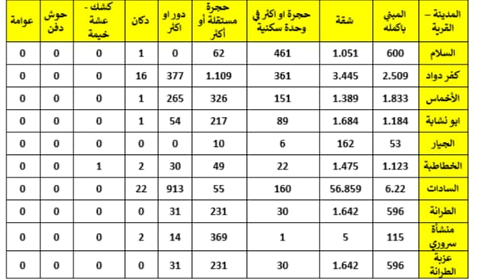
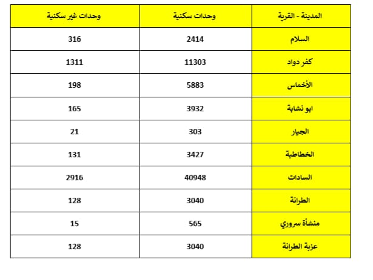
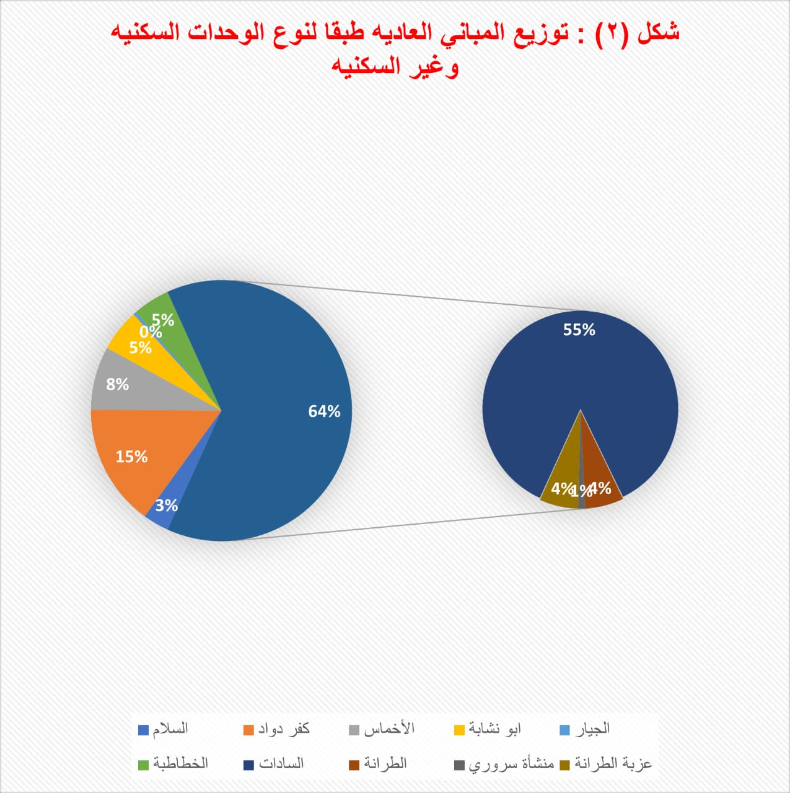
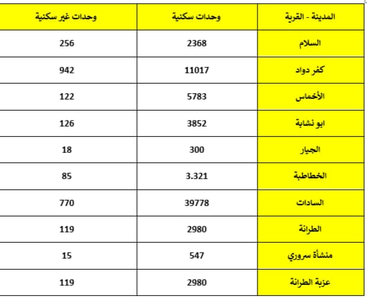
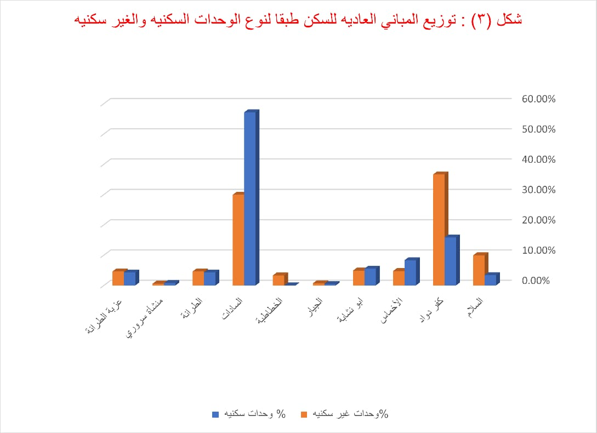

الخدمات والعمران في مدينه السادات
 more.....الخدمات والعمران بمدينه السادات
السادات مدينة في مصر تقع في شمال مصر وتتبع إدارياً لمحافظة المنوفية عاصمة السادات. هي مدينة الجيل الأول والثاني التي أنشأتها إدارة المجتمع العمراني الجديد عام 1976، وقد أصبحت مجتمعاً عمرانياً جديداً قائماً على الأنشطة الصناعية والزراعية والتجمعات السكانية وتقع وسط القاهرة والإسكندرية بجوار دلتا نهر النيل، تشتهر المدينة أيضاً بمساحاتها الخضراء الشاسعة، مما يجعلها وجهة للرحلات اليومية.
الفصل الاول الخصائص العمرانيه بالسادات
وندرس فية أعداد الاسر المصرية طبقا لنوع الوحدة بالمسكن و التوزيع للوحدات المباني العادية والعادية لسكن ، والعادية للعمل طبقا لنوع الوحدات السكنيه والغير سكنيه ويشمل ايضا التوزيع للاسر المصريه طبقا لجمله عدد الحجرات ومتوسط حجم الاسر ومعدل التزاحم .
اولا: التوزيع العددي لاسر المصريه طبقا لنوع وحده السكن
ثانيا: التوزيع العددي لوحدات المباني العاديه طبقا لنوع الوحداتالسكنيه والغير سكنيه
ثالثا: التوزيع العددي للمباني العاديه للسكن طبقا لنوع الوحدات السكنيه والغير سكنيه
رابعا:التوزيع العددي للمباني العاديه للعمل طبقا لنوعالحدات السكنيه والغير سكنيه
خامسا: الاستخدام الحالي للمباني
اولا التوزيع العدي الاسر المصريه طبقا لنوع وحده السكن
حيث نجد أن التوزيع العددي للأسر طبقاً لنوع الوحدات السكنيه يختلف من قرية إلى أخرى، ولذلك نجد أن قرية الأخماس تحتل المركز الأول من حيث المبني بأكمله 1833 ، ونجد أيضاً يقابل هذه القريه على الأقل في المبنى بأكمله قرية الجيار 53 ، ومن حيث الشقه نجد أن السادات أكبر من القري من حيث الشقق وذلك ب 56 1895 ويقابلها في الأقل من حيث الشقق قريه المنشاه سروري خمس شقق سكنيه ومن حيث الحجر نجد ان قريه كفر داود هي اعلى القرى ب 361 حجره ويقابلها في الاقل من حيث الحجر منشاه سروري بحجره واحده ونجد ان قريه كفر داود تحتل المركز الاول من حيث الحجر المستقله ب 1109 حجره مستقله ويقابلها قريه الغيار من اقل الحجر المستقله ب10 حجر مستقله من حيث الدور الواحد نجد ان اعلى قريه هي في قريه السادات 319 دور ويقابلها أقل قريه قريه السلام و قريه الجيار لا يوجد بها ادوار سكنيه اما من حيث الدكاكين التي توجد في مدينه السادات نجد ان السادات تحتوي على 22 دكان ويقابلها في الاقل قريه الجيار وعزبه الطرانه وتحتل قريه الخطاطبه المركز الاول ويوجد بها كشك واحد ام من حيث الحوش الدفن والعوامه لا يوجد في ال10 قرى .
 ثانيا التوزيع العددي لوحدات المباني العاديه طبقا لنوع الوحدات السكنيه والغير سكنيه
حيث نجد أن التوزيع العددي لوحدات المبنى العادية طبقا للنوع الوحدات السكنية يختلف من السكنية والغير سكنية حيث نجد أن السادات تعد من أعلى الوحدات السكنيه في ٤٠٩٨٤ وحده سكنيه بينما من حيث الأقل للوحدات السكنيه قريه منشاه سروره 565 وحده سكنيه وذلك ايضا نجد من حيث الوحدات الغير السكنيه نجد ان السادات تحتل المركز الاول ب 2916 وحده غير سكنيه ويقابلها من حيث اقل قريه في الوحدات الغير سكنيه منشاه سروري ب 15 واحده
 ثالثا التوزيع العددي للمباني العاديه للسكن طبقا لنوع الوحده السكنيه والغير سكنيه
حيث نجد أن التوزيع العددي لوحدات المبنى العادية طبقا للنوع الوحدات السكنية يختلف من السكنية والغير سكنية حيث نجد أن السادات تعد من أعلى الوحدات السكنيه في ٤٠٩٨٤ وحده سكنيه بينما من حيث الأقل للوحدات السكنيه قريه منشاه سروره 565 وحده سكنيه وذلك ايضا نجد من حيث الوحدات الغير السكنيه نجد ان السادات تحتل المركز الاول ب 2916 وحده غير سكنيه ويقابلها من حيث اقل قريه في الوحدات الغير سكنيه منشاه سروري ب 15 واحده
 رابعا التوزيع العددي للمباني العاديه للعمل طبقا لنوع الوحده السكنيه والغير سكنيه
حيث نجد أن التوزيع العددي للمباني العاديه للسكن تختلف من قريه إلى أخرى حيث تحتل السادات المركز الأول من حيث الوحدات السكنيه ب ١١٧٠ وحده سكنيه ويقابلها أقل مركز من الوحدات السكنيه هي منشأة سروري 18 وحده سكنيه من حيث الوحدات الغير سكنيه تحتل السادات المركز الأول بــ 1849 وحده غير سكنيه ويقابلها أقل قريه من حيث الوحدات الغير سكنيه منشأة سروري حيث تعد من القري الخاليه من الوحدات الغير سكنيه.
خامسا الاستخدام الحالي للمباني في السادات
حيث نجد توزيع العددي للمباني العادية والجوزية ومبني غير واضح المعالم طبقا للاستخدام فكانت قرية السادات اكثر القري التي حازت علي اكبر عدد من المباني العاديه طبقا لاستخدام السكان بها فيقدر بحوالي ١١.٨٣١ مبني, كما حازت ايضا علي اكبر عدد من المباني الجوزية ويصل عددها الي ١١٢ مبني , وكانت قرية كفر دواد أكثر القري التي حازت علي اكبر عدد من المباني غير واضحه المعالم طبقا لاستخدام السكان بها فيقدر بحوالي ٢٢٦ مبني , أما قرية الجيار فهي أقل القري التي بها مباني عادية ويقدر عددها بحوالي ١٧٠ مبني فقط وأيضا المباني الجوزيه بها كانت مبني واحد والمباني غير واضحه المعالم كانت ٣ مباني فقط , قرية منشأة سروري كانت خالية تماما من المباني الجوزية وأيضا المباني غير واضحه المعالم.
- التوزيع العددي لوحدات المباني العاديه طبقا لنوع الحيازه
- التوزيع العددي لتوزيع المباني العاديه للعمل طبقا لنوع الحيازه.
- التوزيع العددي لوحدات المباني العاديه للسكن طبقا لنوع الحيازه
- التوزيع العددي للمباني العاديه طبقا للملكيه.
- التوزيع العددي للاسر طبقا لنوع حيازه السكن.
الفصل الثالث : توزيع المباني طبقا لنوع الحيازة بمركز السادات
أولا:التوزيع العددى لوحدات المبانى العادية طبقا لنوع الحيازة
نجد التوزيع العددي لوحدات المباني العادية طبقا لنوع الحيازة فكانت قرية السادات هي الاعلي نصيبا من حيث امتلاكها لكل انواع المباني عدا مباني الهبة فكان عدد المباني الايجار القديم بها ٣١١ مبني وعدد مباني الايجار الجديد بها حوالي ٨٤٢٧ مبني و عدد مباني الايجار المفروش ٥٧ مبني و عدد المباني الملك وصل الي ١٢٨٩٤ مبني وعدد مباني الميزة العينية ١٥٦ مبني وعدد المباني التي لم يتم حيازتها حوالي ٢١٣٦٨ مبني ومباني أخري لم تصنف عددها كان ٥٦ مبني
قرية كفر دواد هي اعلي القري نصيبا من حيث عدد مباني الهبة يقدر عددها بحوالي ٦٥٤ مبني ,أما قرية منشأة سروري كانت تخلو من مباني الايجار القديم ومباني الايجار المفروش والمباني الأخري والأقل نصيبا من عدد مباني الايجار الجديد وصل عددها الي ٥٠ مبني ومباني الهبه ٩٢ مبني والمباني التي لم يتم حيازتها وقدر عددها بحوالي ٣٠ مبني


ثانيا : التوزيع العددي لوحدات المباني العادية للعمل طبقا لنوع الحيازة .
التوزيع العددي لوحدات المباني العادية للعمل طبقا لنوع الحيازة ، ففي فئة الإيجار القديم تتواجد السادات في المرتبة الأولى بينما يتواجد كفر داود في المرتبة الثانية بينما تتواجد منشأة سروري والسلام في المرتبة الأخيرة
وفي فئة الإيجار الجديد تحتل السادات المرتبة الأولى يليها كفر داود وتتواجد الاخماس والجيار في المرتبة الأخيرة، وفي فئة الإيجار المفروش تتواجد السادات في المرتبة الأولى بينما كل القري المتبقية متساويين،
وفئة الملك والتمليك تحتل السادات المرتبة الأولى بينما الجيار تحتل المرتبة الأخيرة، وفئة الهبة تتواجد السلام في المرتبة الأولي وفئة الميزة العينية تتواجد أيضا السادات في المرتبة الأولى والفئة التي لم يتم حيازتها تحتل السادات المرتبة الأولى بينما الجيار ومنشأة سروري في المرتبة الأخيرة.


ثالثاً : التوزيع العددي لوحدات المباني العادية للسكن طبقا لنوع الحيازة .
يوضح الجدول التوزيع العددي لوحدات المباني العادية للسكن طبقا لنوع الحيازة ، ففي فئة الإيجار القديم يحتل مركز السادات المرتبة الأولى والمرتبة الثانية يحتله كفر داود ثم الاخماس بينما منشأة سروري تحتل المرتبة الأخيرة، وفئة الإيجار الجديد الجديد تحتل السادات المرتبة الأولى بينما منشأة سروري تحتل المرتبة الأخيرة، وفئة الإيجار المفروش قرية السلام وكفر داود والجيار والخطاطبة والطرانة ومنشأة سروري وعزبة الطرانة جميعهم متساويين
تحتل السادات المرتبة الأولى، وفئة الملك والتمليك تحتل السادات المرتبة الأولى تليها كفر داود بينما الجيار تحتل المرتبة الأخيرة، وفئة هبة تحتل السادات المرتبة الأولى بينما السلام والجيار ومنشأة سروري في المرتبة الأخيرة وفئة ميزة عينية والفئة التي لم يتم حيازتها تحتل السادات المرتبة الأولى.


رابعا : التوزيع العددي للمباني العادية طبقا للملكية
التوزيع العددي للمباني العادية طبقا للملكية والمباني هنا تنقسم إلي فئتين وهما مباني عادية للسكن ومباني عادية للعمل، في فئة المباني العادية للسكن تحتل السادات المرتبة الأولى تليها كفر داود ثم قرية الاخماس ثم أبو نشابة ثم الخطاطبة بينما الجيار تحتل المرتبة الأخيرة في ذهن الفئة.
وفئة المباني العادية للعمل تحتل السادات المرتبة الأولى تليها كفر داود ثم الاخماس بينما الجيار تحتل المرتبة الأخيرة ونلاحظ أن السادات تحتل المرتبة الأولى في الفئتين بينما الجيار تحتل المرتبة الأخيرة في هذا الفئتين أيضا


خامسا: التوزيع العددي للأسر طبقا لنوع حيازة السكن
التوزيع العددي للأسر والأفراد طبقا لنوع الحيازة بالسكن ، ففي خانة الأسر نجد ان السادات تحتل المرتبة الأولى ثم الاخماس وتتواجد قرية الجيار في المرتبة الأخيرة وفي خانة الأفراد تتواجد السادات فى المرتبة الأولى ويتواجد كفر داود في المرتبة الثانية بينما تتواجد الجيار في المرتبة الأخيرة


- التوزيع العددي للأسر و الافراد طبقا لأتصال المسكن بوسيلة الصرف الصحي
- التوزيع العددي للمباني العادية طبقا لاتصالها بالمرافق العامة
- التوزيع العددي للأسر المصرية طبقا لمصدر مياة الشرب
- التوزيع العددي للمباني العادية للسكن طبقا لأتصالها بالمرافق العامة
الفصل الرابع : الخدمات والمرافق العامة بمركز السادات
أولاً : التوزيع العددي للأسر و الافراد طبقا لإتصال المسكن بوسيلة الصرف الصحي .
يوضح الجدول التوزيع العددي للأسر والأفراد طبقا لاتصال المسكن بوسيلة الصرف الصحي، ونلاحظ في خانة الأسر نجد ان السادات تحتل المرتبة الأولى بينما يتواجد كفر داود في المرتبة الثانية وتتواجد الاخماس في المرتبة الثالثة ويليها أبو نشابة بينما تحتل الجيار المرتبة الأخيرة
وفي خانة الأفراد تتواجد السادات في المرتبة الأولى تليها كفر داود بينما تتواجد منشأة سروري في المرتبة قبل الأخيرة وتتواجد الجيار في المرتبة الأخيرة.


ثانياً : التوزيع العددي للمباني العادية طبقا لإتصالها بالمرافق العامة
يوضح الجدول التوزيع العددي لجملة للمباني العادية طبقاً لاتصالها بالمرافق العامة ، ويتواجد مركز السادات في المرتبة الأولى بينما يتواجد كفر داود في المرتبة الثانية بينما تتواجد الاخماس في المرتبة الثالثة وتتواجد أبو نشابة في المرتبة الرابعة وتليها الخطاطبة في المرتبة الخامسة وتتواجد الطرانة في المرتبة السادسة بينما تتواجد منشأة سروري في المرتبة قبل الأخيرة وتتواجد الجيار في المرتبة الأخيرة.


ثالثا: التوزيع العددي للأسر المصرية طبقا لمصدر مياة الشرب
ويوجد مصدرين لمياه الشرب وهما من الشبكة العامة ومن غير الشبكة العامة ، ففي خانة الشبكة العامة تتواجد السادات في المرتبة الأولى بينما يتواجد كفر داود في المرتبة الثانية وتتواجد الاخماس في المرتبة الثالثة بينما تتواجد الجيار في المرتبة الأخيرة.
وفي خانة من غير الشبكة العامة تحتل السادات المرتبة الأولى بينما يتواجد كفر داود في المرتبة الثانية وتتواجد منشأة سروري في المرتبة الثالثة وتتواجد الجيار في المرتبة قبل الأخيرة وتتواجد الطرانة في المرتبة الأخيرة


رابعاً : التوزيع العددي للمباني العادية للسكن طبقا لإتصالها بالمرافق العامة
يوضح الجدول التوزيع العددي لجملة المباني العادية للسكن طبقا لاتصالها بالمرافق العامة ، حيث تتواجد السادات في المرتبة الأولى بينما يتواجد كفر داود في المرتبة الثانية بينما تتواجد الاخماس في المرتبة الثالثة بينما تتواجد أبو نشابة في المرتبة الرابعة وتليها الخطاطبة في المرتبة الخامسة وتتواجد منشأة سروري في المرتبة قبل الأخيرة وتتواجد الجيار في المرتبة الأخيرة